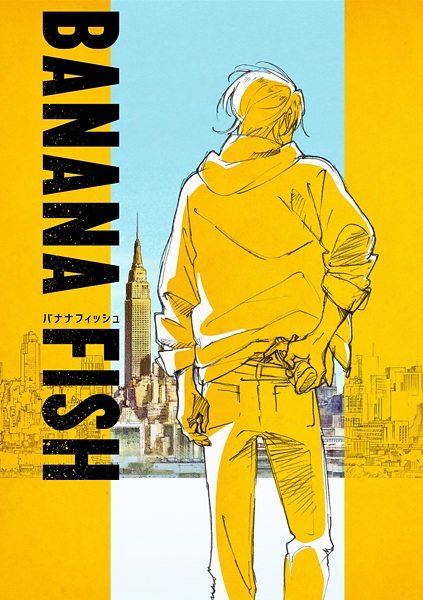
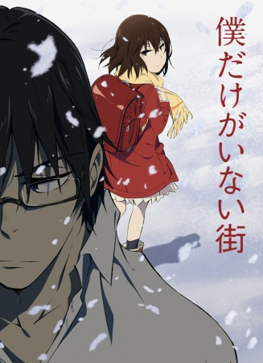

Gibson's Top 5 or so Dopest Anime Reccommendations
Aight so full disclosure these reccommendations are tailored towards someone interested in the action/shounen genre, and
aren't necessarily my "top" shows overall, but they're still amazing nonetheless. If you want to check out my full AniList, give it
a peep
here
Now, in no particular order:
1. Parasyte (Kiseijuu: Sei no Kakuritsu)
Opening
About:
The basic plot is that parasites have infected some of the citizens of Japan, and caused them to turn
into cannibalizing zombies.
This show is p tight. It's got everything you need: action, mystery, suspense, a bit of
sci-fi. I think I'd lump this into tht "thriller" category more than just plain action.
Pros:
Killer soundtrack with extra angst 😤
Great visuals that aren't too off the walls
Isn't afraid to be brutal and visceral
Gibson's Score:8.7/10
2. Psycho-Pass
Opening
About:
This show is also in the sci-fi sphere, this time with an NCIS vibe.
The setting is a city where the police scan people's
subconscious minds for signs of criminal intent. This system lets the show give
a pretty good exploration of justice + psychology while it develops its plot.
The only thing to watch out for is apparently the second season is
not too hot, lol. I haven't watched it yet so I can't confirm, but FYI.
Pros:
Refreshingly dark and realistic in its content
Another 🔥BANGER🔥 soundtrack with a punk-techno flare
Gibson's Score:8.5/10
3. Haikyuu!!
AMV
About:
Bro. Watch Haikyuu. It's the only sports anime on this list, but for good reason. Imagine
all of character development and competitive nature of ping pong - but
applied to a team sport.
Pros:
Most impressive animation on the list by far
THREE seasons released already with a FOURTH on the way
Has the ZACH seal of approval
Cons:
Missed opportunity to create the world's greatest women's volleyball anime
Gibson's Score:9/10
4. Made in Abyss
PV
OST Sample
About:
Hear me out.
Despite it's moe appearance, this show is extremely immersive and easily one of the most intense viewing experiences I've encountered.
I hadn't picked it up for the longest time because of the aesthetic, but eventually decided
to give it a shot because it's the
20th higest rated show of all time (for reals).
Pros:
Super original story and great worldbuilding à-la Avatar
Amazing soundtrack composed by a New Zealander (you know they make good stuff)
Short and entertaining w/ Season 2 on its way
Gibson's Score:9.2/10
Aight, so now we're on to rapid fire round.
There were a couple of straggler shows that I wanted
to put on the list, but wasn't sure a) if you'd seen them or b) which to cut out, so here they all
are, real quick like.

5a. Banana Fish
Elevator Pitch:
Action packed character drama set in the gang ruled streets of New York.
Join hardened gang leader Ash Lynx and the Japanese photographer Eiji Okumura as they
take on the kingpins orchestrating the biggest drug scandal in American History.
Gibson's Score:8.5/10

5b. Erased (Boku Dake ga Inai Machi)
Elevator Pitch:
Action packed character drama set in the gang ruled streets of New York.
Join hardened gang leader Ash Lynx and the Japanese photographer Eiji Okumura as they
take on the kingpins orchestrating the biggest drug scandal in American History.